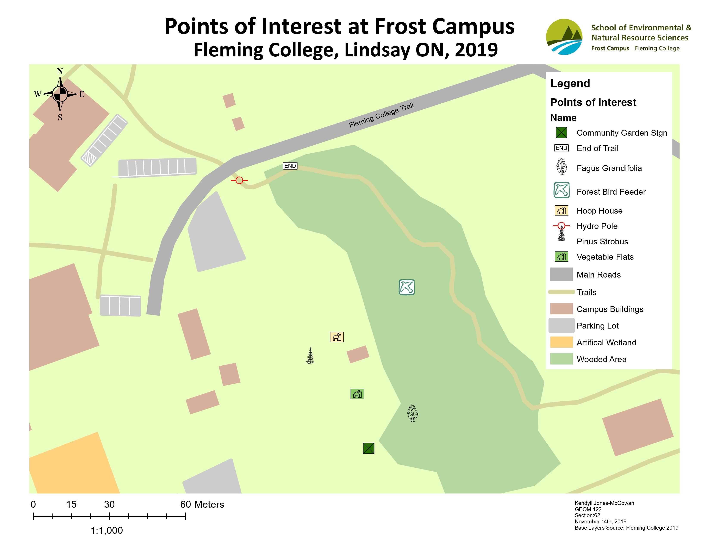
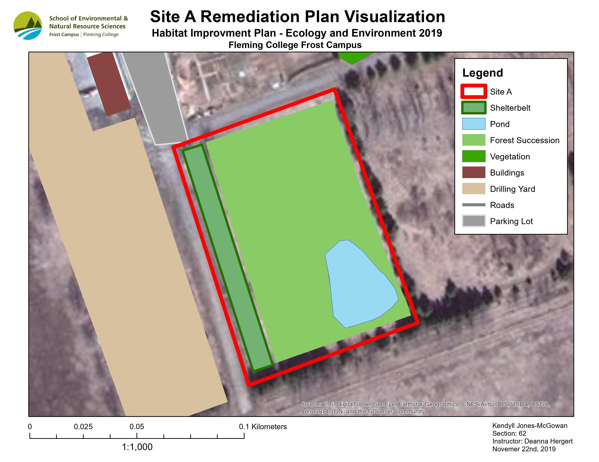
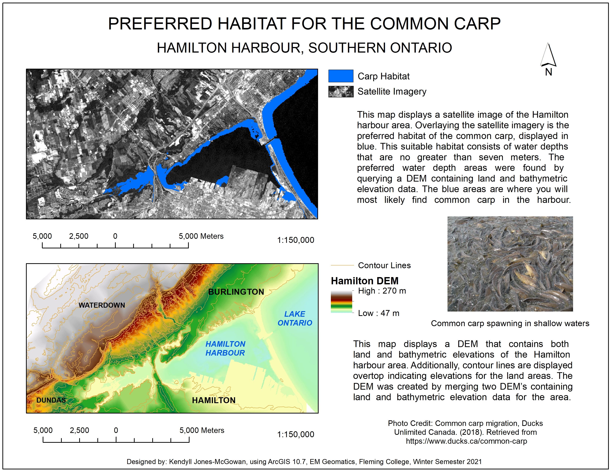

My Map Making Journey
[2019] This map was created by collecting
waypoints on a Garmin eTrex20, and importing them into ArcMap 10.7. The basemap was already provided and
is not my work. I look back at this map and remember thinking that the symbols I chose were great... it
feels good to look back now and think "there is no theme - they're horrible!". It reminds me that my cartographic
skills have come a long way - and I look forward to the end of this school year when I can look back and say the same
thing about some of my more "current" maps.
[2019] Here is another one of the first
maps I made using ArcMap 10.7. This map was created as a deliverable for the ever so famous "first
major group project" you take part in during common first semester at Fleming College. The Habitat
Improvement Plan Project was a wonderful, real world exercise. Although it was a tough assignment at
the time, it set the tone for the remainder of my EM program, and I was hooked on the environmental skills
and knowledge I was developing. It is fun looking back at this map because it reminds me of when I was first
introduced to the immense world of GIS - I had no idea how much I would fall in love with it at this point.
But I was intrigued by the map making and digitizing process.
 [2020] This map was where the passion began to ignite.
The amount of work that went into this map was unlike anything I had done at the time. I had never put such focus or detail
into anything school related before this project. The workflow was as follows; ArcMap 10.7. Satellite imagery of Sierra Leone
was downloaded and georeferenced. Once that was completed, every other feature on the map was digitized. This was my first time
digitizing with such detail - I loved being crunched over my computer, clicking meticulously. After the digitizing was complete,
numerous buffers were created around the river, swamps, and streams to highlight riparian zones, suitable planting areas, as well as
stream areas that would be sensitive to agricultural operations. This one project made me fall in love with GIS. The entire process
of georeferencing - digitizing - analyzing and creating a layout. I knew I wanted GIS to become my career.
[2020] This map was where the passion began to ignite.
The amount of work that went into this map was unlike anything I had done at the time. I had never put such focus or detail
into anything school related before this project. The workflow was as follows; ArcMap 10.7. Satellite imagery of Sierra Leone
was downloaded and georeferenced. Once that was completed, every other feature on the map was digitized. This was my first time
digitizing with such detail - I loved being crunched over my computer, clicking meticulously. After the digitizing was complete,
numerous buffers were created around the river, swamps, and streams to highlight riparian zones, suitable planting areas, as well as
stream areas that would be sensitive to agricultural operations. This one project made me fall in love with GIS. The entire process
of georeferencing - digitizing - analyzing and creating a layout. I knew I wanted GIS to become my career.
 [2020] Here is another map that was fully digitized by me. Having some experience
from the Sierra Leone map, I was able to get very comfortable digitizing in this assignment. This map was created using ArcMap 10.7. The features
were digitized from satellite imagery over Bark Lake Leadership Centre in Irondale. Looking back now and thinking about what I have learned thus far,
I would have digitized differently if I had to re-do this assignment. I zoomed in way too far to digitize, and although detail is what we want to achieve,
slightly less detail would have been ideal in this situation. The large amount of detail in the digitizing process does not do the map at its intended scale
any favours. It only took more time on the authors behalf. Although I learned patience and attention to detail - I am glad I have learned that at certain scales,
digitizing detail could become detrimental. The symbol choice is again - horrible. I am looking forward to making my own symbols one day that share an
aesthetic.
[2020] Here is another map that was fully digitized by me. Having some experience
from the Sierra Leone map, I was able to get very comfortable digitizing in this assignment. This map was created using ArcMap 10.7. The features
were digitized from satellite imagery over Bark Lake Leadership Centre in Irondale. Looking back now and thinking about what I have learned thus far,
I would have digitized differently if I had to re-do this assignment. I zoomed in way too far to digitize, and although detail is what we want to achieve,
slightly less detail would have been ideal in this situation. The large amount of detail in the digitizing process does not do the map at its intended scale
any favours. It only took more time on the authors behalf. Although I learned patience and attention to detail - I am glad I have learned that at certain scales,
digitizing detail could become detrimental. The symbol choice is again - horrible. I am looking forward to making my own symbols one day that share an
aesthetic.
[2021] This map is more on the scientific and application side of GIS. This was my first
time working with a DEM - when I was first introduced to the world of Rasters I knew there was no turning back - I was hooked. Vector data is beautiful, but
the analysis capabilities within Raster data... the possibilities are endless. ArcMap 10.7. This is a satellite image and DEM of the Hamilton Harbour area. Prime
Carp habitat was calculated using bathymetric data from the DEM. This was done by performing a query on the DEM to produce a layer that highlighted the suitable Carp
habitat depths within the harbour.Looking at this map now there is a lot I would change, but the important part is that it conveys the data and findings well.
 [2021] My most current creation - I am extremely proud of this map. It was made using ArcGISPro
and Open Street Map data. It was a deliverable for my Geovisualization course, which is part of the GIS Specialist Program. This is a monochrome map of Charlottetown,
PEI. Creating this map allowed me to really grasp the importance of visual hierarchy, and making elements of your map achieve harmony. I have been to PEI once in my life
and it was the best trip I have ever been on. If you haven't been to PEI - you better go soon. This is the only "proper" map I have made for my program thus far, and I am
excited to see what I will make next with my evolving skillset.
[2021] My most current creation - I am extremely proud of this map. It was made using ArcGISPro
and Open Street Map data. It was a deliverable for my Geovisualization course, which is part of the GIS Specialist Program. This is a monochrome map of Charlottetown,
PEI. Creating this map allowed me to really grasp the importance of visual hierarchy, and making elements of your map achieve harmony. I have been to PEI once in my life
and it was the best trip I have ever been on. If you haven't been to PEI - you better go soon. This is the only "proper" map I have made for my program thus far, and I am
excited to see what I will make next with my evolving skillset.